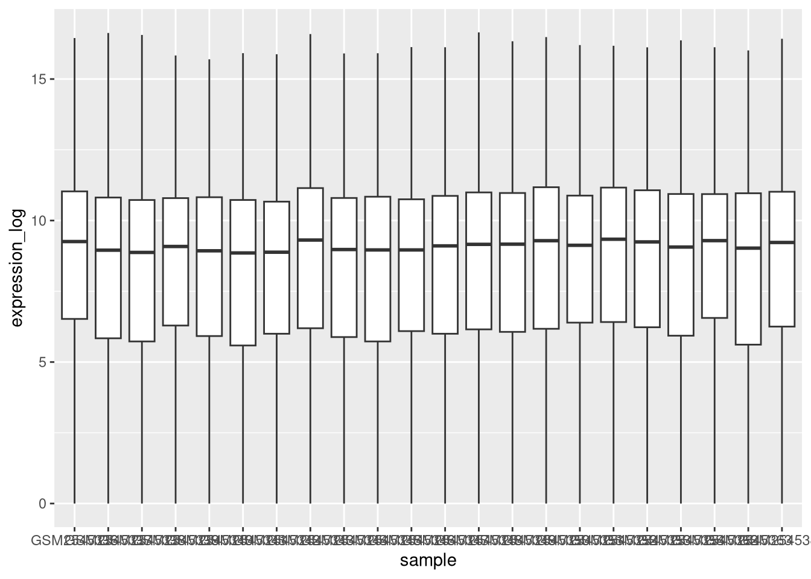
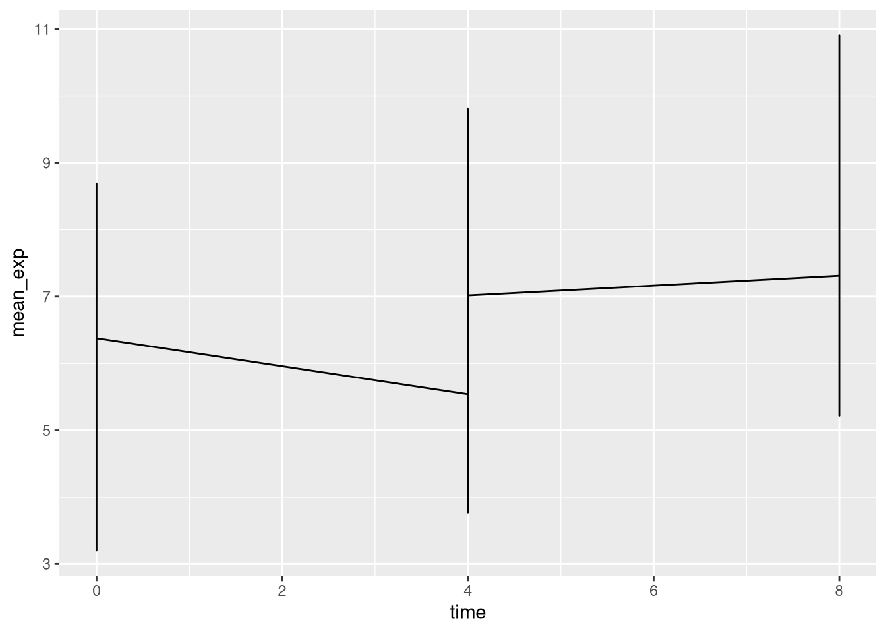
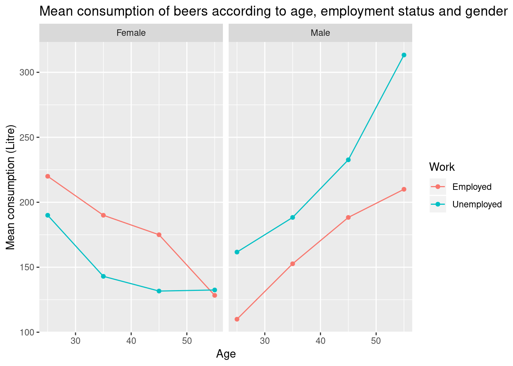

Chapter 5 Data visualization
Learning Objectives
- Produce scatter plots, boxplots, and time series plots using ggplot.
- Set universal plot settings.
- Describe what faceting is and apply faceting in ggplot.
- Modify the aesthetics of an existing ggplot plot (including axis labels and color).
- Build complex and customized plots from data in a data frame.
We start by loading the required packages. ggplot2 is included
in the tidyverse package.
If not still in the workspace, load the data we saved in the previous lesson.
The Data Visualization Cheat
Sheet
will cover the basics and more advanced features of ggplot2 and will
help, in addition to serve as a reminder, getting an overview of the
many data representations available in the package.
5.1 Plotting with ggplot2
ggplot2 is a plotting package that makes it simple to create
complex plots from data in a data frame. It provides a more
programmatic interface for specifying what variables to plot, how they
are displayed, and general visual properties. The theoretical
foundation that supports the ggplot2 is the Grammar of Graphics
(Wilkinson (2005Wilkinson, Leland. 2005. The Grammar of Graphics (Statistics and Computing). Berlin, Heidelberg: Springer-Verlag.)). Using this approach, we only need minimal changes
if the underlying data change or if we decide to change from a bar
plot to a scatterplot. This helps in creating publication quality
plots with minimal amounts of adjustments and tweaking.
There is a book about ggplot2 (Wickham (2016Wickham, Hadley. 2016. ggplot2: Elegant Graphics for Data Analysis. Springer-Verlag New York. http://ggplot2.org.)) that provides a good
overview, but it is outdated. The 3rd edition is in preparation and
will be freely available onlin. The
ggplot2 webpage
(https://ggplot2.tidyverse.org)
provides ample documentation.
ggplot2 functions like data in the ‘long’ format, i.e., a column for
every dimension, and a row for every observation. Well-structured data
will save you lots of time when making figures with ggplot2.
ggplot graphics are built step by step by adding new elements. Adding layers in this fashion allows for extensive flexibility and customization of plots.
To build a ggplot, we will use the following basic template that can be used for different types of plots:
ggplot(data = <DATA>, mapping = aes(<MAPPINGS>)) + <GEOM_FUNCTION>()- use the
ggplot()function and bind the plot to a specific data frame using thedataargument
- define a mapping (using the aesthetic (
aes) function), by selecting the variables to be plotted and specifying how to present them in the graph, e.g. as x/y positions or characteristics such as size, shape, color, etc.
-
add ‘geoms’ – graphical representations of the data in the plot (points, lines, bars).
ggplot2offers many different geoms; we will use some common ones today, including:* `geom_point()` for scatter plots, dot plots, etc. * `geom_boxplot()` for, well, boxplots! * `geom_line()` for trend lines, time series, etc.
To add a geom to the plot use the + operator. Because we have two continuous variables,
let’s use geom_point() first:

The + in the ggplot2 package is particularly useful because it
allows you to modify existing ggplot objects. This means you can
easily set up plot templates and conveniently explore different types
of plots, so the above plot can also be generated with code like this:
# Assign plot to a variable
surveys_plot <- ggplot(data = surveys_complete,
mapping = aes(x = weight, y = hindfoot_length))
# Draw the plot
surveys_plot +
geom_point()Notes
- Anything you put in the
ggplot()function can be seen by any geom layers that you add (i.e., these are universal plot settings). This includes the x- and y-axis mapping you set up inaes(). - You can also specify mappings for a given geom independently of the
mappings defined globally in the
ggplot()function. - The
+sign used to add new layers must be placed at the end of the line containing the previous layer. If, instead, the+sign is added at the beginning of the line containing the new layer,ggplot2will not add the new layer and will return an error message.
# This is the correct syntax for adding layers
surveys_plot +
geom_point()
# This will not add the new layer and will return an error message
surveys_plot
+ geom_point()► Question
Scatter plots can be useful exploratory tools for small datasets. For
data sets with large numbers of observations, such as the
surveys_complete data set, overplotting of points can be a
limitation of scatter plots. One strategy for handling such settings
is to use hexagonal binning of observations. The plot space is
tessellated into hexagons. Each hexagon is assigned a color based on
the number of observations that fall within its boundaries. To use
hexagonal binning ggplot2, first install the R package hexbin from
CRAN and load it.
► Solution
► Question
Then use the geom_hex() function
What are the relative strengths and weaknesses of a hexagonal bin plot compared to a scatter plot? Examine the above scatter plot and compare it with the hexagonal bin plot that you created.
5.2 Building your plots iteratively
Building plots with ggplot2 is typically an iterative process. We start by
defining the dataset we’ll use, lay out the axes, and choose a geom:

Then, we start modifying this plot to extract more information from it. For
instance, we can add transparency (alpha) to avoid overplotting:
ggplot(data = surveys_complete, mapping = aes(x = weight, y = hindfoot_length)) +
geom_point(alpha = 0.1)
We can also add colors for all the points:
ggplot(data = surveys_complete, mapping = aes(x = weight, y = hindfoot_length)) +
geom_point(alpha = 0.1, color = "blue")
Or to color each species in the plot differently, you could use a vector as an input to the argument color. ggplot2 will provide a different color corresponding to different values in the vector. Here is an example where we color with species_id:
ggplot(data = surveys_complete, mapping = aes(x = weight, y = hindfoot_length)) +
geom_point(alpha = 0.1, aes(color = species_id))
We can also specify the colors directly inside the mapping provided in the ggplot() function. This will be seen by any geom layers and the mapping will be determined by the x- and y-axis set up in aes().
ggplot(data = surveys_complete, mapping = aes(x = weight, y = hindfoot_length, color = species_id)) +
geom_point(alpha = 0.1)
Notice that we can change the geom layer and colors will be still determined by species_id
ggplot(data = surveys_complete, mapping = aes(x = weight, y = hindfoot_length, color = species_id)) +
geom_jitter(alpha = 0.1)
► Question
Use what you just learned to create a scatter plot of weight over
species_id with the plot types showing in different colors. Is this a good
way to show this type of data?
► Solution

5.3 Boxplot
We can use boxplots to visualize the distribution of weight within each species:

By adding points to boxplot, we can have a better idea of the number of measurements and of their distribution:
ggplot(data = surveys_complete, mapping = aes(x = species_id, y = weight)) +
geom_boxplot(alpha = 0) +
geom_jitter(alpha = 0.3, color = "tomato")Notice how the boxplot layer is behind the jitter layer? What do you need to change in the code to put the boxplot in front of the points such that it’s not hidden?
► Question
Boxplots are useful summaries, but hide the shape of the distribution. For example, if the distribution is bimodal, we would not see it in a boxplot. An alternative to the boxplot is the violin plot, where the shape (of the density of points) is drawn.
- Replace the box plot with a violin plot; see
geom_violin().
In many types of data, it is important to consider the scale of the observations. For example, it may be worth changing the scale of the axis to better distribute the observations in the space of the plot. Changing the scale of the axes is done similarly to adding/modifying other components (i.e., by incrementally adding commands). Try making these modifications:
- Represent weight on the log10 scale; see
scale_y_log10().
So far, we’ve looked at the distribution of weight within species. Try making a new plot to explore the distribution of another variable within each species.
Create a boxplot for
hindfoot_length. Overlay the boxplot layer on a jitter layer to show actual measurements.Add color to the data points on your boxplot according to the plot from which the sample was taken (
plot_id).
Hint: Check the class for plot_id. Consider changing the class of plot_id from integer to factor. Why does this change how R makes the graph?
5.4 Plotting time series data
Let’s calculate number of counts per year for each species. First we need to group the data and count records within each group:
Time series data can be visualized as a line plot with years on the x axis and counts on the y axis:

Unfortunately, this does not work because we plotted data for all the species
together. We need to tell ggplot to draw a line for each species by modifying
the aesthetic function to include group = species_id:

We will be able to distinguish species in the plot if we add colors (using color also automatically groups the data):
5.5 Faceting
ggplot2 has a special technique called faceting that allows the user to split one
plot into multiple plots based on a factor included in the dataset. We will use it to
make a time series plot for each species:
ggplot(data = yearly_counts, mapping = aes(x = year, y = n)) +
geom_line() +
facet_wrap(~ species_id)
Now we would like to split the line in each plot by the sex of each individual
measured. To do that we need to make counts in the data frame grouped by year,
species_id, and sex:
We can now make the faceted plot by splitting further by sex using color (within a single plot):
ggplot(data = yearly_sex_counts, mapping = aes(x = year, y = n, color = sex)) +
geom_line() +
facet_wrap(~ species_id)
Usually plots with white background look more readable when printed. We can set
the background to white using the function theme_bw(). Additionally, you can remove
the grid:
ggplot(data = yearly_sex_counts, mapping = aes(x = year, y = n, color = sex)) +
geom_line() +
facet_wrap(~ species_id) +
theme_bw() +
theme(panel.grid = element_blank())
5.6 ggplot2 themes
In addition to theme_bw(), which changes the plot background to white, ggplot2
comes with several other themes which can be useful to quickly change the look
of your visualization. The complete list of themes is available
at http://docs.ggplot2.org/current/ggtheme.html. theme_minimal() and
theme_light() are popular, and theme_void() can be useful as a starting
point to create a new hand-crafted theme.
The
ggthemes package
provides a wide variety of options (including an Excel 2003 theme).
The ggplot2 extensions website provides a list
of packages that extend the capabilities of ggplot2, including additional
themes.
► Question
Use what you just learned to create a plot that depicts how the average weight of each species changes through the years.
► Solution

The facet_wrap geometry extracts plots into an arbitrary number of dimensions
to allow them to cleanly fit on one page. On the other hand, the facet_grid
geometry allows you to explicitly specify how you want your plots to be
arranged via formula notation (rows ~ columns; a . can be used as
a placeholder that indicates only one row or column).
Let’s modify the previous plot to compare how the weights of males and females has changed through time:
# One column, facet by rows
yearly_sex_weight <- surveys_complete %>%
group_by(year, sex, species_id) %>%
summarize(avg_weight = mean(weight))
ggplot(data = yearly_sex_weight,
mapping = aes(x = year, y = avg_weight, color = species_id)) +
geom_line() +
facet_grid(sex ~ .)
# One row, facet by column
ggplot(data = yearly_sex_weight,
mapping = aes(x = year, y = avg_weight, color = species_id)) +
geom_line() +
facet_grid(. ~ sex)
5.7 Customisation
Take a look at the ggplot2 cheat
sheet,
and think of ways you could improve the plot.
Now, let’s change names of axes to something more informative than ‘year’ and ‘n’ and add a title to the figure:
ggplot(data = yearly_sex_counts, mapping = aes(x = year, y = n, color = sex)) +
geom_line() +
facet_wrap(~ species_id) +
labs(title = "Observed species in time",
x = "Year of observation",
y = "Number of species") +
theme_bw()
The axes have more informative names, but their readability can be improved by increasing the font size:
ggplot(data = yearly_sex_counts, mapping = aes(x = year, y = n, color = sex)) +
geom_line() +
facet_wrap(~ species_id) +
labs(title = "Observed species in time",
x = "Year of observation",
y = "Number of species") +
theme_bw() +
theme(text=element_text(size = 16))
Note that it is also possible to change the fonts of your plots. If you are on
Windows, you may have to install
the extrafont package, and follow the
instructions included in the README for this package.
After our manipulations, you may notice that the values on the x-axis are still not properly readable. Let’s change the orientation of the labels and adjust them vertically and horizontally so they don’t overlap. You can use a 90-degree angle, or experiment to find the appropriate angle for diagonally oriented labels:
ggplot(data = yearly_sex_counts, mapping = aes(x = year, y = n, color = sex)) +
geom_line() +
facet_wrap(~ species_id) +
labs(title = "Observed species in time",
x = "Year of observation",
y = "Number of species") +
theme_bw() +
theme(axis.text.x = element_text(colour = "grey20", size = 12, angle = 90, hjust = 0.5, vjust = 0.5),
axis.text.y = element_text(colour = "grey20", size = 12),
text = element_text(size = 16))
If you like the changes you created better than the default theme, you can save them as an object to be able to easily apply them to other plots you may create:
grey_theme <- theme(axis.text.x = element_text(colour = "grey20", size = 12, angle = 90, hjust = 0.5, vjust = 0.5),
axis.text.y = element_text(colour = "grey20", size = 12),
text = element_text(size = 16))
ggplot(surveys_complete, aes(x = species_id, y = hindfoot_length)) +
geom_boxplot() +
grey_theme
► Question
With all of this information in hand, please take another five minutes
to either improve one of the plots generated in this exercise or
create a beautiful graph of your own. Use the RStudio ggplot2
cheat
sheet
for inspiration. Here are some ideas:
- See if you can change the thickness of the lines.
- Can you find a way to change the name of the legend? What about its labels?
- Try using a different color palette (see http://www.cookbook-r.com/Graphs/Colors_(ggplot2)/).
5.8 Arranging plots
Faceting is a great tool for splitting one plot into multiple plots,
but sometimes you may want to produce a single figure that contains
multiple plots using different variables or even different data
frames. The gridExtra package allows us to combine separate
ggplots into a single figure using grid.arrange():
library(gridExtra)
spp_weight_boxplot <- ggplot(data = surveys_complete,
mapping = aes(x = species_id, y = weight)) +
geom_boxplot() +
xlab("Species") + ylab("Weight (g)") +
scale_y_log10()
spp_count_plot <- ggplot(data = yearly_counts,
mapping = aes(x = year, y = n, color = species_id)) +
geom_line() +
xlab("Year") + ylab("Abundance")
grid.arrange(spp_weight_boxplot, spp_count_plot, ncol = 2, widths = c(4, 6))In addition to the ncol and nrow arguments, used to make simple
arrangements, there are tools for constructing more complex
layouts.
Another, more recent, and very elegant package to arrache plots
produced with ggplot2 is the
patchwork
package. Before composing plots, we remove the legend altogether by
updating the theme.
5.9 Exporting plots
After creating your plot, you can save it to a file in your favorite format. The Export tab in the Plot pane in RStudio will save your plots at low resolution, which will not be accepted by many journals and will not scale well for posters.
Instead, use the ggsave() function, which allows you easily change
the dimension and resolution of your plot by adjusting the appropriate
arguments (width, height and dpi).
Make sure you have the fig_output/ folder in your working directory.
my_plot <- ggplot(data = yearly_sex_counts,
mapping = aes(x = year, y = n, color = sex)) +
geom_line() +
facet_wrap(~ species_id) +
labs(title = "Observed species in time",
x = "Year of observation",
y = "Number of species") +
theme_bw() +
theme(axis.text.x = element_text(colour = "grey20", size = 12, angle = 90, hjust = 0.5, vjust = 0.5),
axis.text.y = element_text(colour = "grey20", size = 12),
text=element_text(size = 16))
ggsave("fig_output/yearly_sex_counts.png", my_plot, width = 15, height = 10)
# This also works for grid.arrange() plots
combo_plot <- grid.arrange(spp_weight_boxplot, spp_count_plot, ncol = 2, widths = c(4, 6))
ggsave("fig_output/combo_plot_abun_weight.png", combo_plot, width = 10, dpi = 300)Note: The parameters width and height also determine the font size in the saved plot.
5.10 Other packages for visualisation
ggplot2 is a very powerful package that fits very nicely in our
tidy data and tidy tools pipeline. There are other visualisation
packages in R that shouldn’t be ignored.
Base graphics
The default graphics system that comes with R, often called base R
graphics is simple and fast. It is based on the painter’s or canvas
model, where different output are directly overlaid on top of each
other (see figure 5.1). This is a fundamental
difference with ggplot2 (and with lattice, described below), that
returns dedicated objects, that are rendered on screen or in a file,
and that can even be updated.
par(mfrow = c(1, 3))
plot(1:20, main = "First layer, produced with plot(1:20)")
plot(1:20, main = "A horizontal red line, added with abline(h = 10)")
abline(h = 10, col = "red")
plot(1:20, main = "A rectangle, added with rect(5, 5, 15, 15)")
abline(h = 10, col = "red")
rect(5, 5, 15, 15, lwd = 3)Figure 5.1: Successive layers added on top of each other.

Another main difference is that base graphics’ plotting function try
to do the right thing based on their input type, i.e. they will
adapt their behaviour based on the class of their input. This is again
very different from what we have in ggplot2, that only accepts
dataframes as input, and that requires plots to be constructed bit by
bit.
par(mfrow = c(2, 2))
boxplot(rnorm(100),
main = "Boxplot of rnorm(100)")
boxplot(matrix(rnorm(100), ncol = 10),
main = "Boxplot of matrix(rnorm(100), ncol = 10)")
hist(rnorm(100))
hist(matrix(rnorm(100), ncol = 10))Figure 5.2: Plotting boxplots (top) and histograms (bottom) vectors (left) or a matrices (right).
The out-of-the-box approach in base graphics can be very efficient for
simple, standard figures, that can be produced very quickly with a
single line of code and a single function such as plot, or hist,
or boxplot, … The defaults are however not always the most
appealing and tuning of figures, especially when they become more
complex (for example to produce facets), can become lengthy and
cumbersome.
The lattice package
The lattice package is similar to ggplot2 in that is uses
dataframes as input, returns graphical objects and supports
faceting. lattice however isn’t based on the grammar of graphics
and has a more convoluted interface.
A good reference for the lattice package is Deepayan (2008Deepayan, Sarkar. 2008. Lattice: Multivariate Data Visualization with R. New York: Springer. http://lmdvr.r-forge.r-project.org.).
5.11 Additional exercises
► Question
Load the beer consuption data with
Analyse the data to answer the question Do men drink more than women according to age and working status? Now reproduce the figure below.
Figure 5.3: Visualisation of beer consumption, highlighting different patterns of beer consumption in employed and unemployed males and females.

► Question
We are now going to analyse transcriptomics data from the TCGA project.
Using the file returned by the
expression.csv()function from therWSBIM1207package, create a table calledexpression.Inspect the data.
The sampleID column gives the TCGA reference of the sample and
sample is unique. The 12 first characters (TCGA-XX-XXXX) of the
samples ID are unique to each patient. The 3 last characters of the
samples ID indicate the type of sample: samples ending with ‘-01A’
(TCGA-XX-XXXX-01A) correspond to tumors and samples ending with ‘-11A’
(TCGA-XX-XXXX-11A) correspond to normal peritumoral tissues.
The patient column gives the reference of each patient. Note that
some patient for which both tumor and normal tissue were analysed are
recorded twice. The type column gives the nature of each sample
(tumor or normal tissue). The 5 next column give the expression levels
of 5 genes in each sample.
Using geom_point, draw a plot showing distribution of expression levels of A2LD1 in normal tissue samples and in primary tumor samples.
Repeat this visualisation using this time the geom_jitter. Which representation is more appropriate? Why?
Colour the samples according to the tissue type.
Colour the samples according to their expression level in A2ML1.
Highlight the points corresponding to patient “TCGA-73-4676”.
Add a transparent boxplot to the graph.
Change the y scale to log10 scale.
Visualise the expression of A1BG against that of A2LD1 setting the x axis on the log10 scale. Colours the observations based on their type and resize the points according to the expression level of the A2ML1 gene.
► Question
After gathering the interroA data from the rWSBIM1207 package in a
long table format (see additional exercise chapter 4),
visualise the results for each test and make and female students.
Page built: 2020-02-28